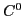
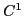

We use a generalized space-time finite element method to find a new computational approach to the time-based Dirac equation. In our method we replace the standard

linear Lagrangian elements with C1 trigonometric elements.
elements preserve the continuity of position, momentum and energy in the quantum wave and trigonometric basis functions are conceptually closer to the function space of available analytic solutions. Instead of using a space-only discretization with a time-stepping scheme, we simultaneously discretize both the spatial and temporal dimensions.The result is a discrete form of the Dirac equation that converges to the analytic solution without modifying the original Dirac operator. Numerical results using PETSc and its KSP solvers in Cluster machines will be presented with a possible parallelization implementation. Finally we show that because we use a space-time discretization technique, our method demonstrates the same Lorentz covariance as the continuum Dirac equation.